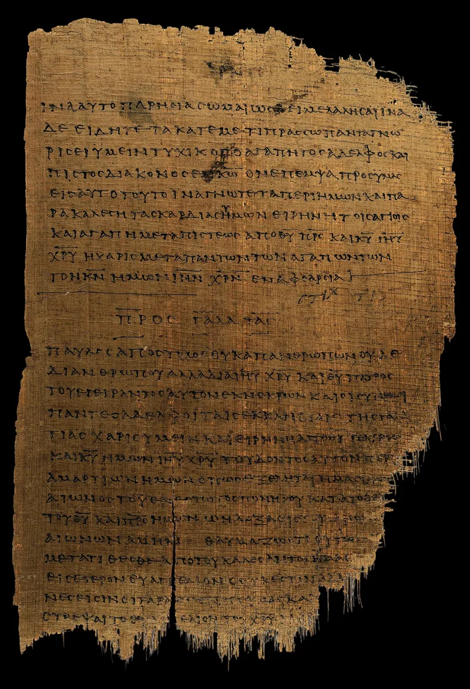

The camps state these facts themselves. You can make this point from their own teaching.
The street camps teach a strict order between men and women, openly and on video. Women are covered, in skirts, and call men sir.
They stay quiet in the assembly. Talking back is treated as a covenant offence.
Shaming women in trousers on the street is a known tactic.
They say it is repair, not control. Slavery took the man out of the Black family, they argue.
Later welfare rules kept him out. So the camps are putting back what was broken.
Men who show up, provide, and answer for it. Women honoured, instead of left to carry it all alone.
Half of that is right. Black family life really was torn apart, and that is history, not a talking point.
The ache under the teaching is real.
They admit this openly: the teaching is published by the camps themselves, not alleged by opponents. The question is whether the remedy matches Scripture, not whether the wound is real.
You can agree about the wound and still ask about the cure. Those are two conversations.
Run them together and you lose both.
"The damage to the family is real. Is this what Scripture says the repair looks like?"

Slavery took the man out of the home. The camps are putting him back.
Their defence is repair, not control, in its own telling. Slavery took the man out of the Black family, they argue, and later welfare rules kept him out. The camps are rebuilding what was broken. Men accountable, providing, and present. Women honoured and protected, not left to carry a household alone.
They cite Deuteronomy 22:5 on distinct dress. They cite 1 Corinthians 11:3-10 on headship and covering. They cite 1 Timothy 2:11-12 on women learning in silence, and Titus 2:4-5 on keepers at home. These are the plain words of the same Bible their critics claim.
Women in the movement write publicly about it too. They describe the structure as relief rather than oppression. They point to marriage rates and family stability in the camps, against the numbers all around them.
They teach this openly. The wound is real; ask whether the cure matches Scripture.
Graded admitted, because the teaching is not alleged by opponents. The camps publish it themselves.
Concede the diagnosis underneath, because it is partly right. The tearing apart of Black family life is real history. The church largely watched it happen. And wanting to rebuild is not contemptible. The proof texts are real texts that Christians disagree about, so do not pretend complementarian readings are absurd on their face.
What cannot be defended is the gap between the texts cited and the practice seen. Nothing in 1 Corinthians 11 or Titus 2 authorises shouting obscenities at a woman on a sidewalk. And the movement's own standard makes this measurable. Ephesians 5 makes headship cruciform: self-giving to the point of death. That is the exact inversion of dominance. A structure that publicly humiliates women has failed the text it invokes.